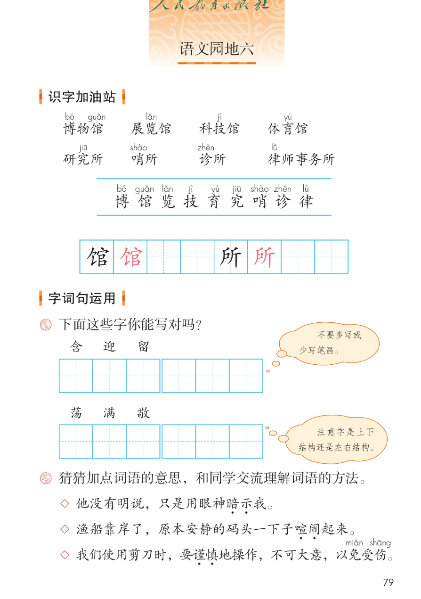
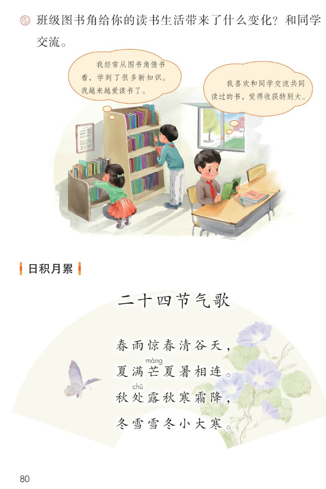
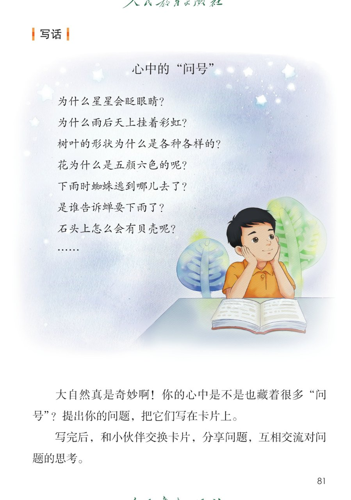
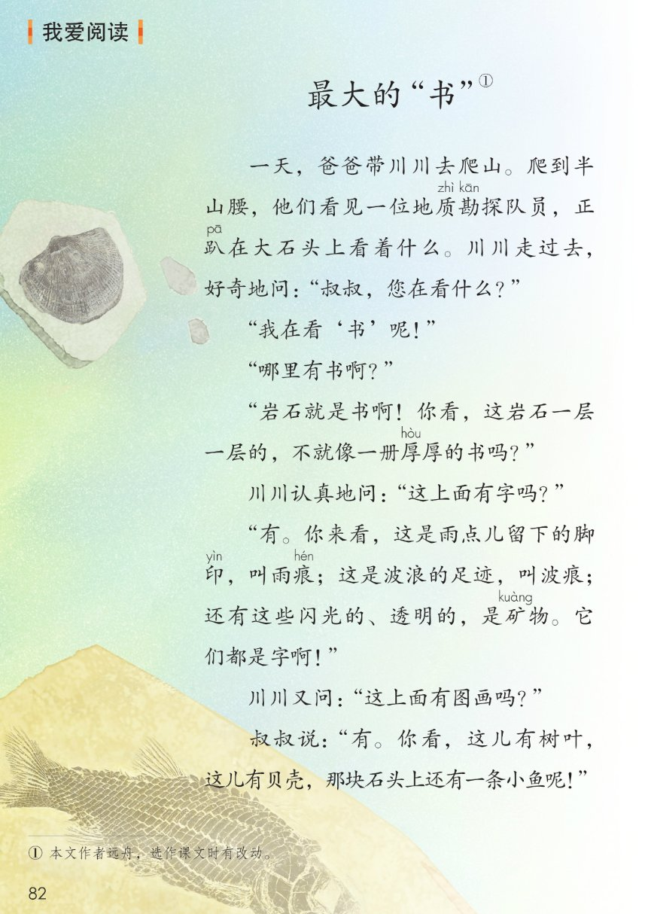
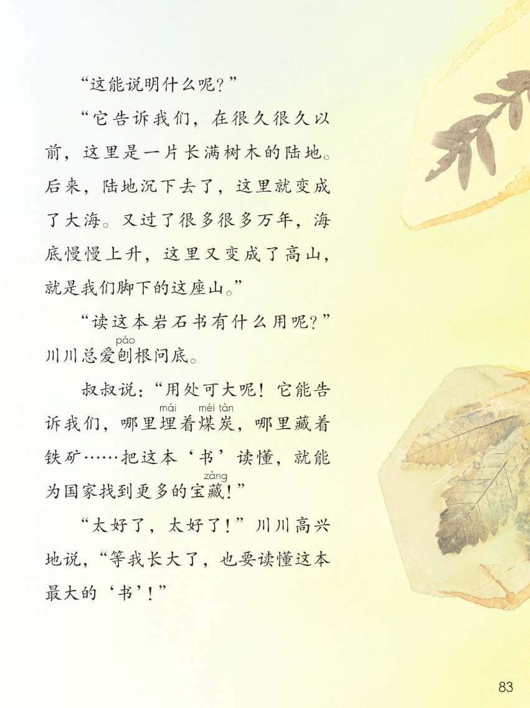

×
🔊 手机听不到声音怎么办？
① 先把手机
媒体音量调大 ，确认没开静音、没连蓝牙耳机；在微信里打开的，点右上角「⋯ → 用浏览器打开」。
② 还是没声音？到应用商店免费下载
Microsoft Edge 浏览器 （它自带朗读发声），用它打开本页面就能出声。
③ 换了 Edge 仍然没声音，说明这部手机的
硬件/系统不支持 网页朗读（多为老旧机型）；近几年买的新手机一般都能正常播放。
→ 打开声音自检
统编版 · 二年级下册 · 第六单元
第六单元 · 阅读 · 大自然的秘密
单元综合课件：语文园地六 · 写话 · 展示台 · 日积月累 · 我爱阅读
馆所词语 8 个
会认 9 字
会写 2 字
二十四节气歌
闯关 8 题
这个单元学了什么： 四篇课文都在讲大自然 ——古诗里的夏天、一场雷雨、野外辨方向的天然指南针、太空生活的趣事。
语文园地六把本单元用到的馆所词语、易错字、理解词语的方法、心中的问号、二十四节气歌和《最大的书》 收一收、用一用。点一下任一卡片或句子，就能听。
课本第 79 页
点词听读音，点蓝线行听全行
课件引导： 下面两组词语，课本分别归在「馆」和「所」的下面——都和场馆、场所 有关。读一读，认一认带拼音的字。
🏛 馆
博bó 物馆guǎn 展览lǎn 馆
科技jì 馆
体育yù 馆
🏢 所
研究究jiū
哨shào 所诊zhěn 所律lǜ 师事务所
博bó 馆guǎn 览lǎn 技jì 育yù 究jiū 哨shào 诊zhěn 律lǜ
📌 注音按课本照录：蓝线行 9 个字全部标音 ；「研究所」的研、「体育馆」的体课本未标音，不另加注。
课本第 79 页两条蓝线之间那一行，按课本顺序
田字格：馆 所（黑色是范字，红色是描红）
课本第 79 页
课本第 79 页
题目（课本原文）： 下面这些字你能写对吗？不要多写或少写笔画。
题目（课本原文）： 注意字是上下结构 还是左右结构 。
📌 六个字都是容易写错的字：含、迎、留是上面三个，荡、满、敬是下面三个。卡片上的要点是课件补的参考 ，以教材为准。
课本第 79 页
题目（课本原文）： 猜猜加点词语的意思，和同学交流理解词语的方法。
◇ 他没有明说，只是用眼神暗示
◇ 渔船靠岸了，原本安静的码头一下子喧闹
◇ 我们使用剪刀时，要谨慎 免miǎn 受伤shāng 。
📌 三个加点词都可以想它的反义词 来理解：暗示——明说、喧闹——安静、谨慎——大意。这是课件补的理解方法参考 ，意思的猜法不唯一，多和同学交流。
课本第 81 页
把心里的问号写下来
题目（课本原文）： 大自然真是奇妙啊！你的心中是不是也藏着很多「问号」？提出你的问题，把它们写在卡片上。写完后，和小伙伴交换卡片，分享问题，互相交流对问题的思考。
1
把问号写下来
提出你的问题，写在卡片上（课本题干）
📌 七个问题都是课本原话 ；问号是你自己提出来的，答案不唯一 ——先大胆问，再慢慢找答案。
课本第 80 页
说说图书角带来的变化
题目（课本原文）： 班级图书角给你的读书生活带来了什么变化？和同学交流。
同学三（课本原话）： 我越来越爱读书了。
📌 三句话都是课本里同学说的话 。照着他们的样子说一说：图书角让你读到了什么书、知道了什么、变得怎么样了。
课本第 80 页
点一句读一句
日积月累 · 二十四节气歌
四句在说什么： 每句藏着六个节气 ，从春到冬——春：立春、雨水、惊蛰、春分、清明、谷雨；夏：立夏、小满、芒种 、夏至、小暑、大暑；秋：立秋、处暑 、白露、秋分、寒露、霜降；冬：立冬、小雪、大雪、冬至、小寒、大寒。（课件补的展开，供参考）
📌 注音按课本逐处照录：芒 máng （芒种）、处 chǔ （处暑，读第三声）两处；其余字课本未标音，不另加注。
🎯 背诵闯关（三步）
🔊 四句连起来读
第一步： 跟读，一句一句跟着读。第二步： 看提示背，只看每句的第一个字。第三步： 合上书背一遍，再对照课本。
课本第 82~83 页
点一段读一段，注音按课本随文照录
读前想一想： 川川跟爸爸去爬山，遇见了一位地质勘探队员 ，他趴在大石头上看的，到底是什么「书」呢？读一读：岩石怎么会是一本书？
岩石这本书的「字」和「图画」分别是什么？读这本「书」有什么用？
💡 字 + 图画 + 用处： 字——雨痕、波痕、矿物 ；图画——树叶、贝壳、小鱼 ；用处——读懂它，就能知道哪里埋着煤炭 、哪里藏着铁矿 ，为祖国找到更多的宝藏 。
和本单元连起来看： 古诗里的夏天（古诗二首）→ 一场雷雨的前后（雷雨）→ 天然的指南针（要是你在野外迷了路）→ 太空里的趣事（太空生活趣事多）→ 岩石里也藏着大自然的信息 （最大的「书」）。
词语积累（取自故事）
勘探 ——探明地质情况好奇 ——心里觉得新鲜、想知道刨根问底 ——一直追问到底宝藏 ——蕴藏的珍贵东西
这个故事告诉我们
岩石一层一层的，就是一本厚厚的书 。
书里有字 （雨痕、波痕、矿物），也有图画 （树叶、贝壳、小鱼）。
读懂这本「书」，能为国家找到更多的宝藏 。
点选项就判对错，答完自动算分
已经答 0 题，答对 0 题。
点图放大

第 79 页 · 识字加油站 · 字词句运用

第 80 页 · 展示台 · 日积月累

第 81 页 · 写话 · 心中的问号

第 82 页 · 我爱阅读《最大的「书」》上

第 83 页 · 我爱阅读《最大的「书」》下